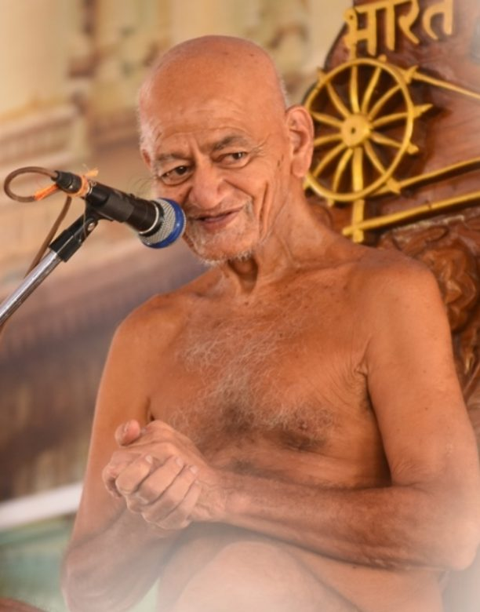

Ahimsa
Do no harm in thought, word or deed.
A calm, simple place to understand Jain values, stories and the teachings of Bhagwan Mahavir.

Jainism is an ancient path of non-violence, truth and self-control. It teaches that every living being has a soul and deserves respect. Jains aim to live lightly, speak kindly and free the soul from karma, step by step. You do not need to know any Sanskrit or Prakrit to begin.
Do no harm in thought, word or deed.
Speak the truth, kindly.
Take only what is freely given.
Practice restraint and purity.
Hold few possessions, and hold them loosely.
Point your phone camera at a code to open a YouTube playlist. Tap a code to see it larger.
Start here: the basics in plain words.
Their names, their emblems and a fun guessing game.
Easy reads to go deeper.
Short talks and explainers.
Online and offline classes, plus a kids quiz.
Quotes you can share.
Common questions answered.
Small vows, honest reflection.

Jain monks walk barefoot, own almost nothing and speak with great gentleness. Their lives show what the principles look like every day.
Watch talksLive and let live.